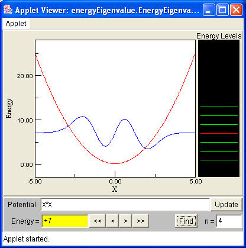

EnergyEigenvalue uses the shooting method to solve
the time independent Schrödinger equation in order to find the quantum wavefunction and its energy eigenvalue.
<applet
codebase="../classes/"
archive="EnergyEigenvalue4_.jar,STools4.jar"
code="energyEigenvalue.EnergyEigenvalue.class"
name="eigenvalue"
width="400"
height="350">
<param name="Energy" value="0.5">
<param name="XMin" value="-3">
<param name="XMax" value="3">
<param name="YMin" value="-25">
<param name="YMax" value="25">
<param name="AutoScaleY" value="true">
<param name="Potential" value="sign(sin(pi*x-pi/2))*20">
<param name="ShowFunctions" value="true">
<param name="ShowControls" value="true">
<param name="HBarTwoM" value="1">
<param name="Lowest" value="1">
<param name="Highest" value="6">
<param name="NumPts" value="1000">
<param name="ShowSpectrum" value="true">
<param name="ShowPotential" value="true">
<param name="Tolerance" value="1e-10">
<param name="MaxIterations" value="400">
<param name="BreakValue" value="1e20">
<param name="ScaleToArea" value="false">
</applet>
The large number of parameters in EnergyEigenvalue allows this Physlet to be used without script. The potential energy as
well as the number of wavefunctions to pre-calculate and are specified. Additional wavefunctions can be calculated by entering
either the quantum number or energy eigenvalue into the appropriate field in the user interface. Click-dragging
the mouse inside the energy level diagram will display the appropriate wavefunction when the mouse crosses the eigenvalue.
Right-click dragging will display the shooting-method calculation as it is being performed thereby showing how only certain
energy values satisfy the appropriate boundary conditions.